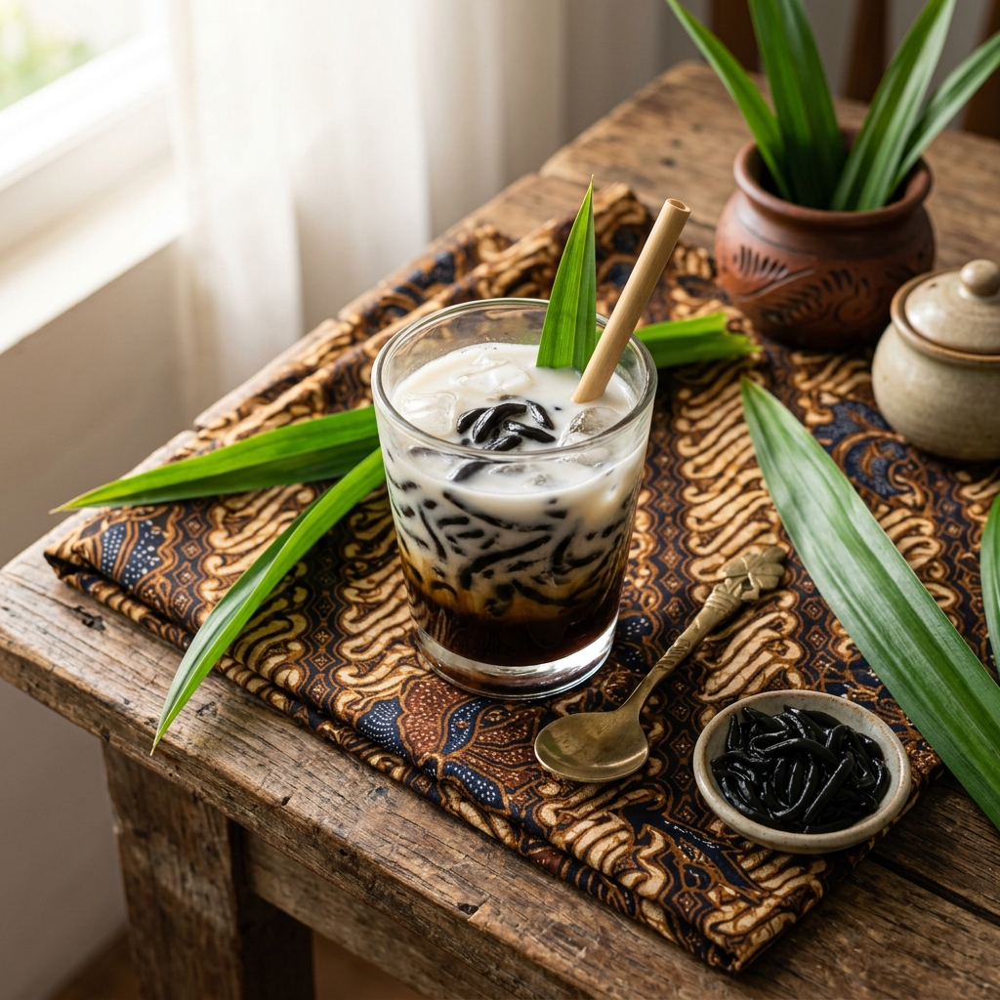
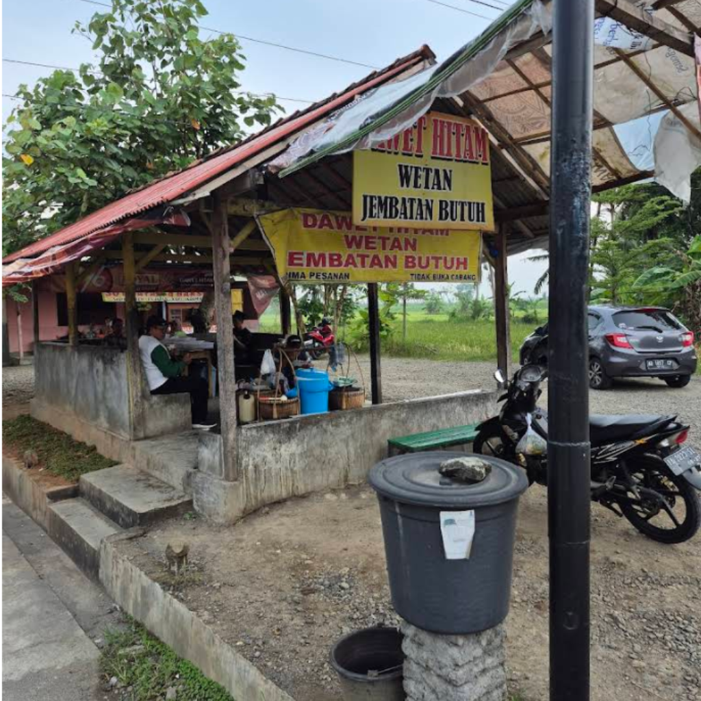
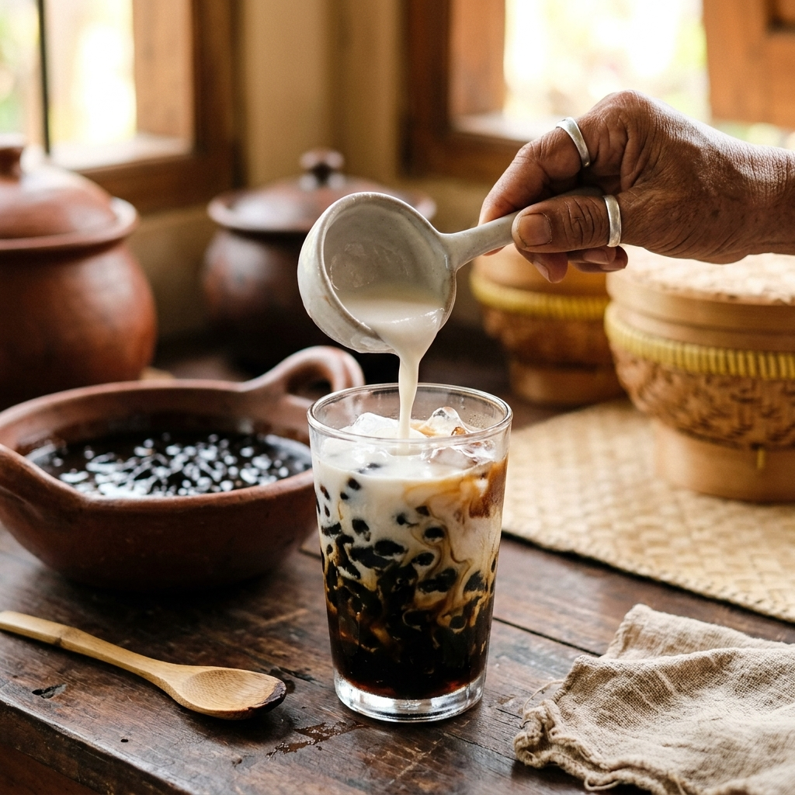
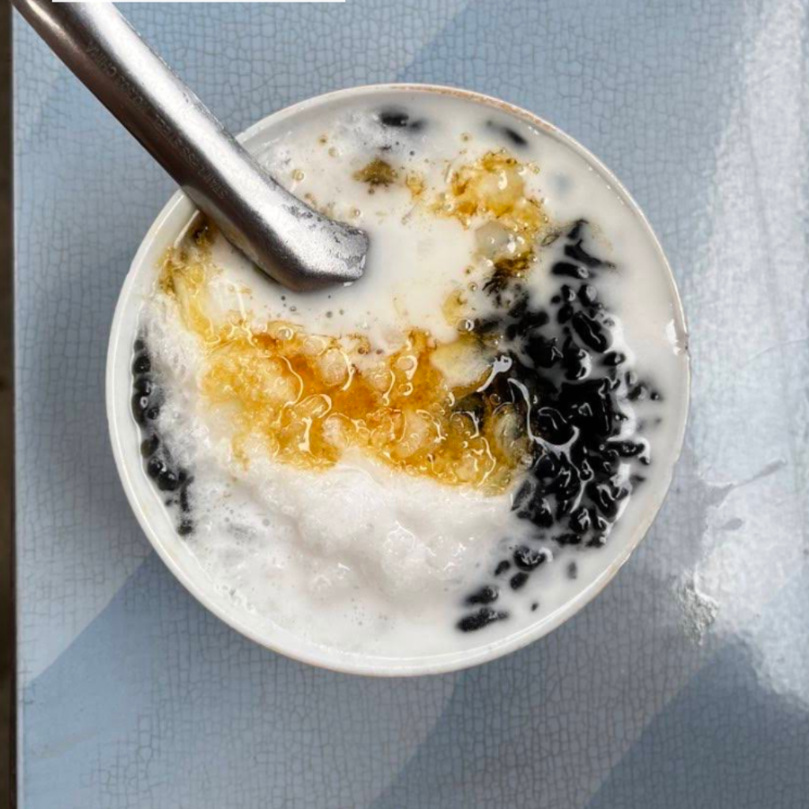
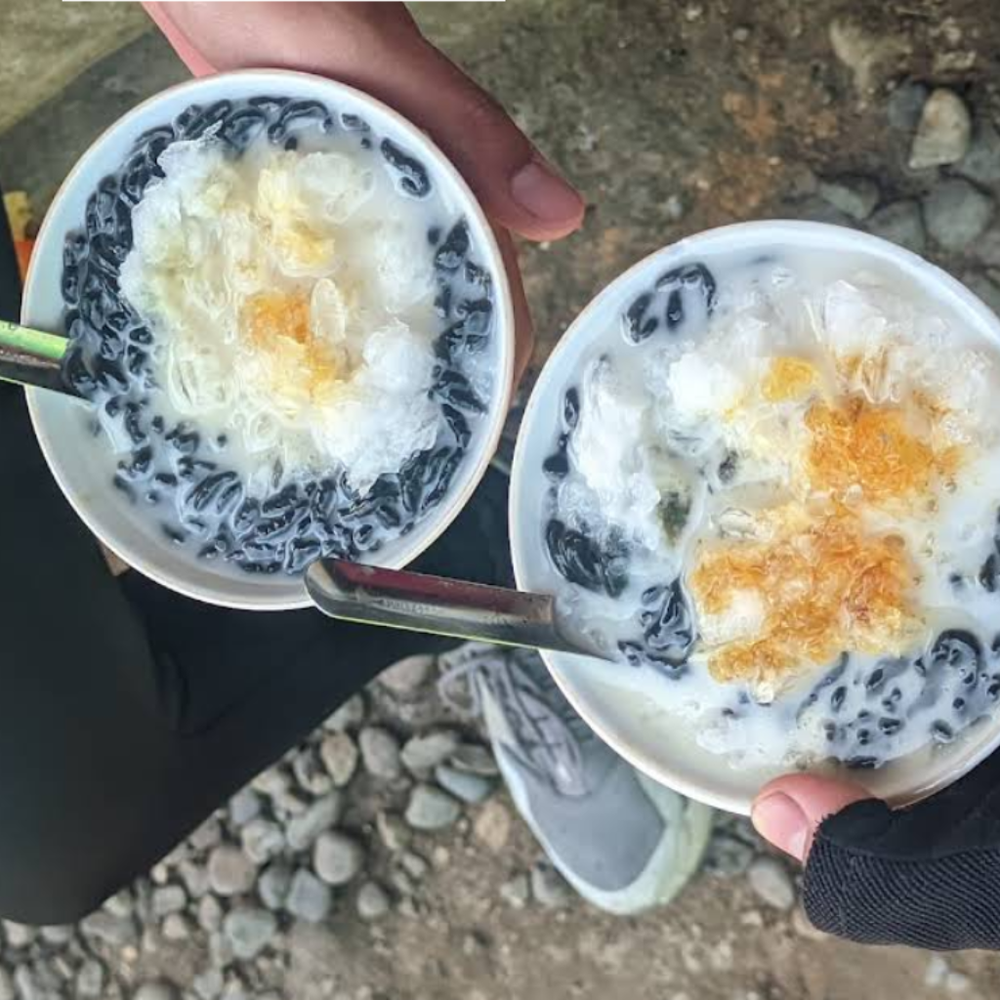
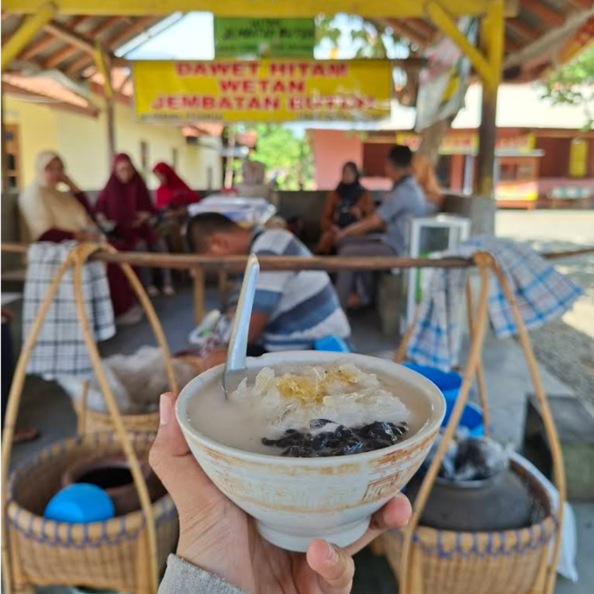
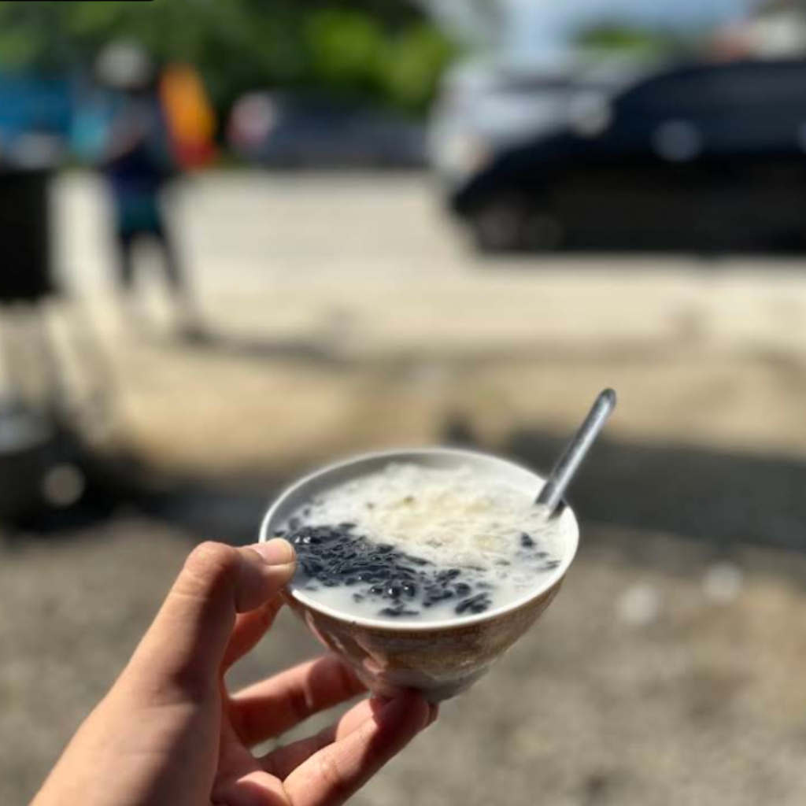

Khas Purworejo · Sejak 1950-an
Jembatan Butuh
Segarnya warisan rasa tradisional dari Kecamatan Butuh, Kabupaten Purworejo, Jawa Tengah
Dawet Ireng Jembatan Butuh dirintis oleh Mbah Ahmad Dansri sejak tahun 1950-an. Keunikan warna hitamnya berasal dari abu jerami padi yang dibakar dan dihaluskan — bukan pewarna buatan.
Terletak di Dusun Ketundan, Desa Butuh, Kecamatan Butuh — tepat di sisi timur Jembatan Butuh di jalur Purworejo–Kebumen. Awalnya dijajakan berkeliling dari sawah ke sawah untuk para petani.

Dari abu jerami padi — bukan pewarna buatan. Ciri khas yang membedakan dari dawet lainnya.
Nama unik "Jembatan Butuh" mudah diingat dan meningkatkan daya tarik promosi digital.
Wisatawan, generasi muda, pecinta kuliner tradisional, hingga masyarakat lokal Purworejo.
Pemesanan via WhatsApp Business, Instagram, TikTok, dan Google Maps.
Diwariskan turun-temurun sejak 1950-an oleh Mbah Ahmad Dansri. Resep dan cita rasa khas yang sulit ditiru.
Gula jawa asli dari nira kelapa, santan kelapa murni segar, dan abu jerami padi untuk warna hitam alami.

Setiap porsi dibuat manual tanpa mesin. Tekstur dan rasa yang tidak bisa ditiru produksi massal.

Proses produksi bersih dengan kemasan food-grade untuk menjaga kualitas hingga tangan konsumen.
Buah tangan favorit wisatawan di jalur Purworejo–Kebumen. Ramai dikunjungi terutama saat musim liburan.
Jerami padi dibakar menjadi abu halus yang memberikan warna hitam khas. Abu dicampur tepung beras lalu dicetak menjadi cendol dengan cetakan tradisional. Gula jawa direbus hingga menjadi sirup kental, disajikan bersama santan kelapa segar dan es batu.
Konten video pendek proses pembuatan dan review menarik yang viral di media sosial.
Pemesanan langsung dan layanan pelanggan responsif melalui WhatsApp resmi.
Hadir di Shopee, Tokopedia, GoFood, Google Maps, dan Google Business Profile.
Food blogger dan travel vlogger untuk review autentik & meningkatkan interaksi sosial media.
"Segarnya bukan cuma di lidah,
tapi juga di hati."

"Kalau pulang ke Purworejo selalu nyempetin buat beli dawet ireng di sini. Rasanya mantap, beda sama dawet yg dari Banjarnegara."

"Dawet Ireng Kuliner khas Purworejo. Manisnya pas, cendolnya lembut, segar. Enak. Bisa disajikan dengan pilihan dengan es ataupun tanpa es. Dapat dibawa pulang, pisah dan campur. Tempatnya kecil tapi teduh.. lokasi dekat dengan jembatan butuh. Halaman parkir luas."

"Dawet Ireng yang lejen di jalan lintas selatan ruas Purworejo kebumen, tepatnya sebelah jembatan Butuh. Murah tapi enak dan bikin ketagihan, dari masa kecil sampai sekarang rasanya gak berubah dan tetap enak. Sekarang diteruskan oleh anaknya dan generasi kedua dari pak Wagiman."
Pesan langsung melalui WhatsApp atau pesan lewat aplikasi favorit Anda!
Dusun Ketundan, Desa Butuh, Kecamatan Butuh, Kabupaten Purworejo — tepat di sisi timur Jembatan Butuh, jalur Purworejo–Kebumen.